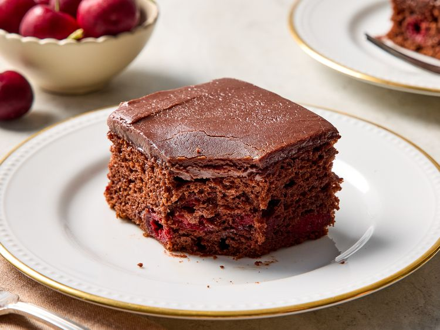

Homepage
Chocolate Cherry Cake

Description
- A store-bought chocolate cake mix helps make this recipe come together fast and easy.
- Home cooks suggest using almond extract to boost the cherry-chocolate flavor.
- Allrecipes member Ellie boasts, "This is a delicious and easy cake."
Ingredients
- 1 (15.25 ounce) package chocolate cake mix
- 1 (21 ounce) can cherry pie filling
- 3 large eggs
- 1 cup white sugar
- 5 tablespoons butter
- ⅓ cup milk
- 1 cup semisweet chocolate chips
Steps
- Gather the ingredients. Preheat the oven to 350 degrees F (175 degrees C).
Grease and flour a 9x13-inch baking pan.
- Combine cake mix, cherry pie filling, and three eggs in a large bowl until well blended; pour cake mixture into prepared pan.
- Bake in the preheated oven until a toothpick inserted into the center comes out clean, about 35 to 40 minutes.
Let cake cool completely.
- To make the frosting: Combine sugar, butter, and milk in a saucepan.
Bring to a boil, stirring constantly, and cook for 1 minute.
Remove from heat and stir in chocolate chips until melted and smooth.
- Spread frosting evenly over cooled chocolate cake.
- Slice and serve.